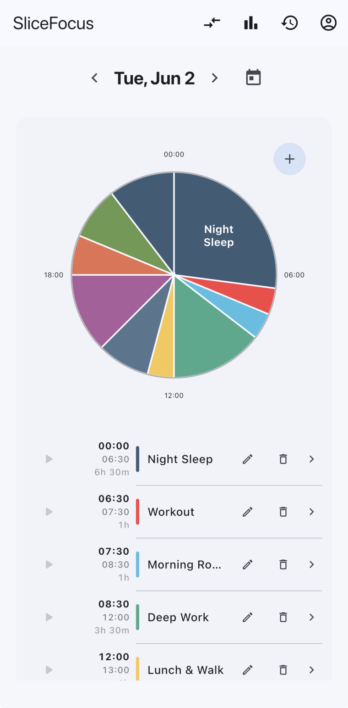
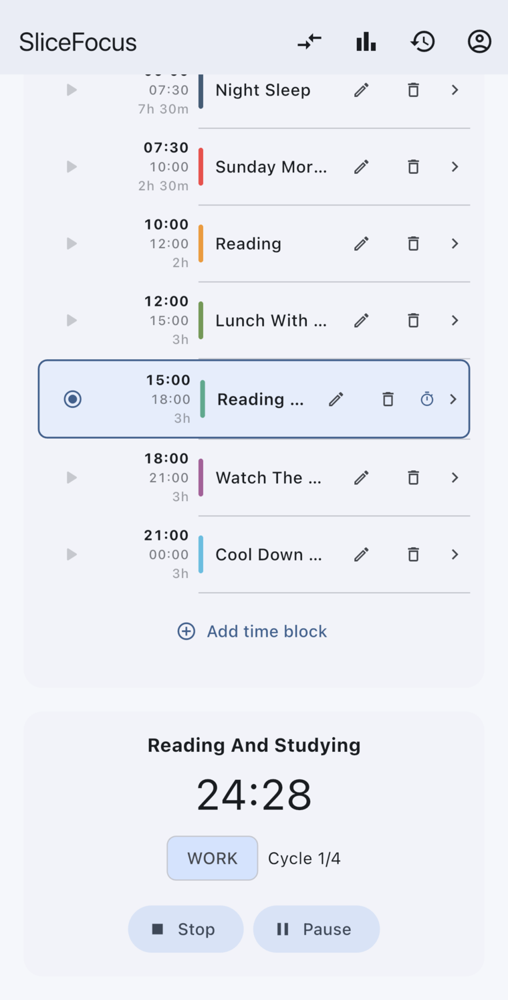

Plan your day on a clock.
It runs itself.
SliceFocus lays your day out on a 24-hour circle and moves from one focus block to the next on its own — no timers to start, no taps between tasks.


How it works
Draw your day. Then let it carry you.
Sketch your day as colored blocks on a 24-hour radial canvas — one glance shows where your time actually goes. Tap a block to start a focus session with a built-in Pomodoro timer.
When a block ends, the next one begins on its own. No alarm to dismiss, no “start” button to find — you just keep working while the clock moves underneath you.

Features
One quiet app, a few good things.
Plan on a 24-hour radial canvas
Sketch your whole day as colored blocks on a single clock face — one glance shows where your time actually goes.
A built-in Pomodoro for deep work
Tap any block to start a focus session. Set your work and break lengths once; the countdown keeps you in the zone.
A timer that runs on your lock screen
Lock your phone and the countdown keeps going, right on the lock screen — no need to keep the app open or awake.
Gentle session & break nudges
When a focus stretch ends, a calm notification hands you your break — then starts the next block on its own.
Planned vs. actual
See how your real day stacked up against your plan, with the time you actually spent laid over what you intended.
Trends & analytics
Watch your focus minutes add up over the week and spot the patterns in how you spend your time.
Why it works
Built on how attention actually behaves.
SliceFocus leans on a few things the research is fairly clear about:
-
Switching tasks leaves part of your attention stuck on the one you just left — what researchers call attention residue.
Leroy, “Why is it so hard to do my work?” — Organizational Behavior and Human Decision Processes, 2009.
-
Deciding in advance when and where you’ll do something reliably improves follow-through.
Gollwitzer & Brandstätter, “Implementation Intentions and Effective Goal Pursuit” — Journal of Personality and Social Psychology, 1997.
-
Interruptions don’t just cost the moment — getting your focus back afterward takes real mental effort.
Mark, Gudith & Klocke, “The Cost of Interrupted Work” — Proc. CHI, 2008.
-
Seeing your plan laid out in front of you offloads work your memory would otherwise have to carry.
Kirsh & Maglio, “On Distinguishing Epistemic from Pragmatic Action” — Cognitive Science, 1994.
These are findings about attention and planning in general, not studies of SliceFocus. We just tried to build with the grain of them.